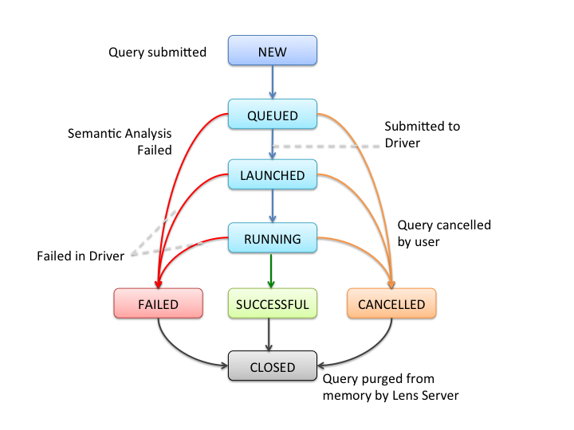

Grill Server runs several services which can be used from their REST endpoints. This document covers some of the important services, their purpose and key API calls.
Grill server provides metastore service for managing metadata. Metadata exposed by grill is inspired by OLAP data cubes. See Metastore Model for metastore constructs that grill provides.
Grill server also provides query service for querying data exposed by grill. See Query Language for the grammar of the query.
To access any service on grill, user should be working in a session. User can also pass various configuration parameters from client.
The sections below give more details on each service and configuration.
Client configuration can be overridden in grill-client-site.xml. See client configuration for all the configuration parameters available and their default values.
To use any Grill service the user must first create a session. Each Grill session is associated with a unique session handle, which must be passed when making queries, or doing metadata operations in the same session. To check if the session service is deployed in the Grill Server, user can send a GET request to /session. An OK response means that the session service is deployed.
Sessions also allow users to set configuration or resources which could be shared across a group of queries. For example, if a group of queries need to call a UDF available in some specific jar, then the jar file can be added as a resource in the session. All queries started within the same session can make use of the jar file.
GRILL provides REST api, Java client api and CLI for doing all session level operations.
The important API calls exposed by the session resource are -
The Query Execution Service is used to query data exposed by Grill.
To summarize, given below are steps for batch (async) queries
Steps for interactive queries.
A query can be run once, but its results can be fetched any number of times, if the results are persisted, until its purged from server memory. Results can be obtained by sending a GET to /queryapi/queries/queryhandle/resultset. This endpoint takes optional fromindex and fetchsize parameters which can be used for pagination of results.
Various query result formatting and fetching options are described in query result doc.
The following diagram shows query state transition in the Grill Server
When user submits a query to the Grill Server, its starts in the NEW state. After the query is submitted, it moves into the QUEUED state. Until Grill server is free to take up the query, it remains in the QUEUED state. As soon as Grill server starts processing the query, it enters the LAUNCHED state. At this stage Grill has decided which backend engine will be used to execute the query.
For each query Grill server will poll the chosen backend engine for query status. A GET on the query endpoint returns the latest status of the query.
The RUNNING state indicates that the query is currently being processed by the query backend.
After the RUNNING state, the query can enter either the SUCCESSFUL or FAILED states, depending on the result of query execution. If the query is SUCCESSFUL, its result set can be retrieved using the result set API call, by passing the session handle and query handle. The query can be executed once, and its results can be fetched multiple times unless the query has been purged from Grill server state.
In any state, if the user requests that the query be cancelled, the query will enter into CANCELLED state. Query can be cancelled by sending a DELETE at the query endpoint.
FAILED, SUCCESSFUL and CANCELLED are end states for a query. Once a query reaches these states, it becomes eligible to purging. The query is purged when its purge delay expires, after which it is not possible to retrieve results of the query. This purge delay is configurable. After purging the query enters the CLOSED state.
The Metastore service is used for DDL operations like creating, updating cubes, fact tables and dimensions. It also pprovides endpoints to create storage tables and to add partitions to a storage table. For more detailed information see the metastore service resource documentation.
For resource exposed endpoint for cubes, facts, dimensions and storage tables. For each of the resource, HTTP methods specify the operation to be performed. For example, a POST on the cubes resource creates a cube, whereas a GET on the cubes reource will get list of all cubes. Similar convention is followed for fact, dimension, and storage tables.
For Java clients, JAXB classes corresponding to each of the endpoints are available.